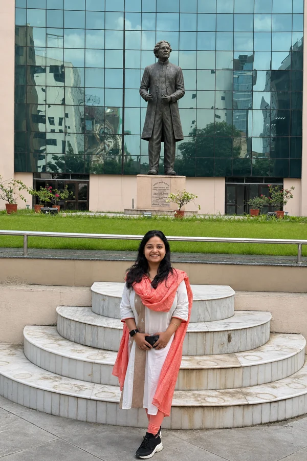
· Upcoming event
Gearing up for the coming year! Delighted to have been invited to deliver a lecture at Bose Institute. Looking forward to sharing our research and exchanging ideas with colleagues and students.
Date to be announced.
LAB NOTES / MAJUMDER LAB
The latest from our research, presentations, publications, and life in the lab.

· Upcoming event
Gearing up for the coming year! Delighted to have been invited to deliver a lecture at Bose Institute. Looking forward to sharing our research and exchanging ideas with colleagues and students.
Date to be announced.

· Welcome to the lab
A warm welcome to Bishnupada Mandal, who has joined the PhD programme as the first research scholar in our lab! We are delighted to have him with us and wish him all the very best for his research career ahead.
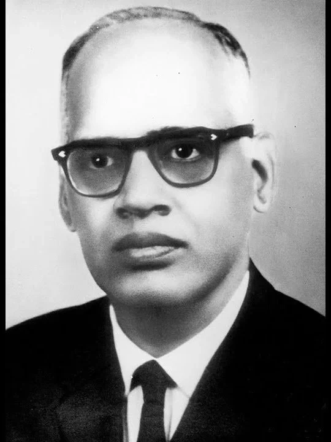
G. N. Ramachandran· G. N. Ramachandran Lecture Series
Pleased to have attended the G. N. Ramachandran Lecture Series on Bioinformatics and Computational Biology at IIT Kharagpur. An opportunity to engage with developments in computational biology and reflect on Ramachandran’s lasting contributions to structural biology, from protein conformational analysis to the collagen triple helix. It was a pleasure to meet Prof. P. Balaram from my alma mater, IISc Bengaluru, along with other renowned scientists.
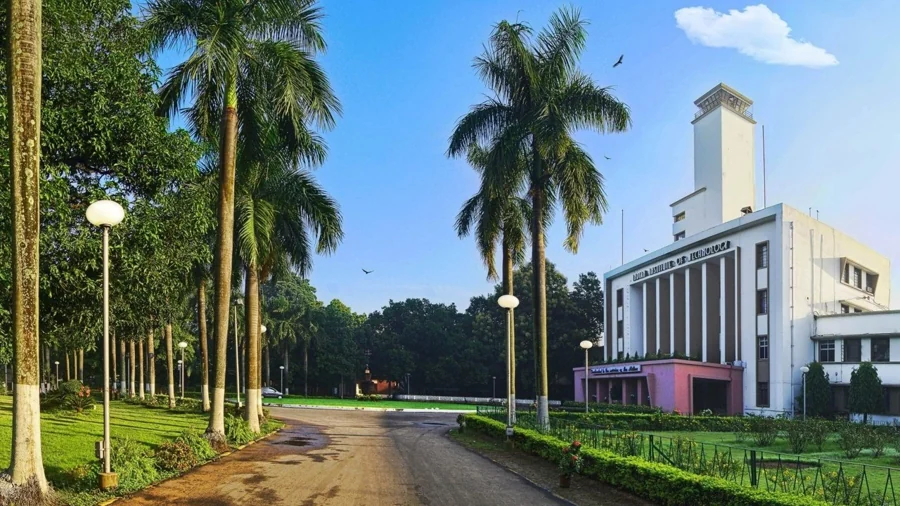
· EMSI 2026
Delighted to have delivered an invited lecture at EMSI 2026, Kolkata, on our Chp1 work. We reveal how cyclic oligoadenylate signalling opens a lipid-gated membrane pore in Chp1, enabling ion flow and membrane depolarization during CRISPR-mediated antiviral defence. Read the bioRxiv preprint for more.
It was lovely to reconnect with old friends and meet new colleagues! Happy to have also become a life member of the Electron Microscope Society of India (EMSI)! 🙂
Warm congratulations to Ahin Roy on receiving the EMSI Excellence in Microscopy award! 🎉
· SBC(I) life membership
Happy to have become a life member of the Society of Biological Chemists (India), SBC(I)! Established in 1930 and headquartered at IISc, Bengaluru, the society promotes research, education, and scientific exchange in biochemistry, molecular biology, and allied life sciences. Looking forward to connecting with this community.
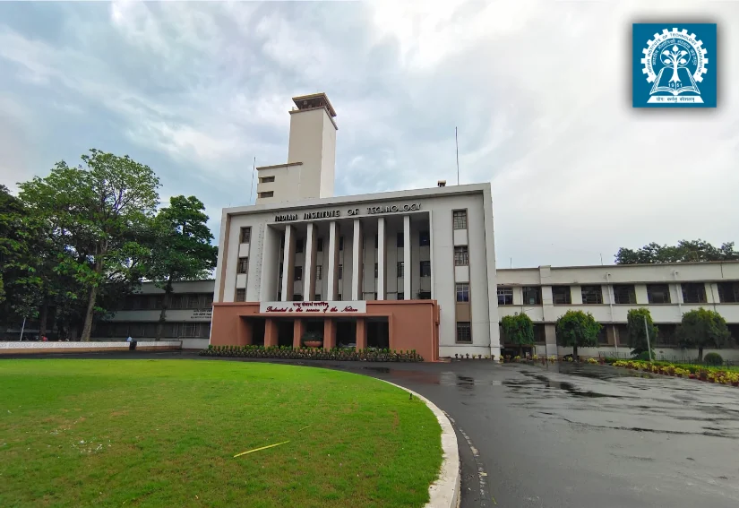
· IITKGP Foundation coverage
Grateful to the IIT Kharagpur Foundation for featuring our research on the molecular machinery of bacterial immunity in its newsletter. Thank you for sharing our work with the wider IITKGP community.
Read the IITKGP Foundation feature.
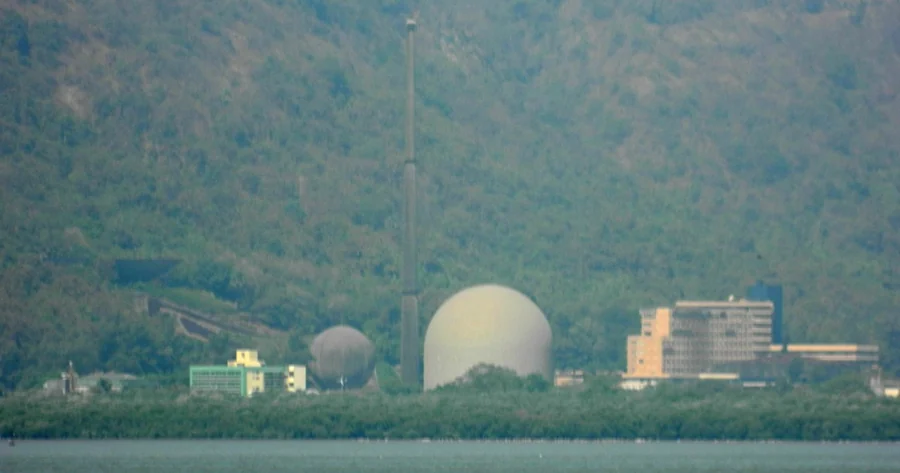
· Invited talk
Delighted to have given an invited talk at Bhabha Atomic Research Centre (BARC), Mumbai, on our Cap1 membrane pore complex work. We reveal how cyclic tetra-adenylate activates Cap1 to open a membrane pore during type III-A CRISPR-Cas antiviral defence.
Read the bioRxiv preprint — recently accepted in Nature Structural & Molecular Biology (NSMB)! 🙂
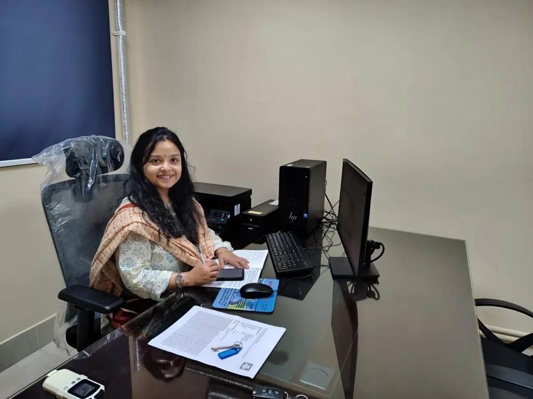
June 1, 2026 · Major update
Very excited to share that I have moved to the Department of Bioscience and Biotechnology as an Assistant Professor at IIT Kharagpur. The green campus is a welcome respite from the Indian summer! After my PhD at Penmatsa Lab, MBU, IISc and my postdoc stint at the Dinshaw Patel Lab in New York City, very happy to be in the serene campus of IIT Kharagpur, and hope I can do some cool science here too!
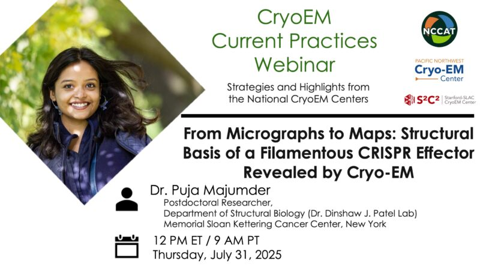
· Invited webinar
Delighted to present our Cat1 filament cryo-EM data-processing work in an invited CryoEM Current Practices webinar, hosted by the US National CryoEM Centers: NCCAT at NYSBC, PNCC in Portland, and the Stanford–SLAC CryoEM Center (S²C²).
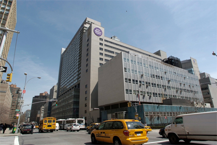
· Fifth NYC Area Cryo-EM Meeting
Pleased to present our Cat1 filament work at the Fifth NYC Area Cryo-EM Meeting at NYU Langone Health—a great opportunity to exchange ideas with the local cryo-EM community.
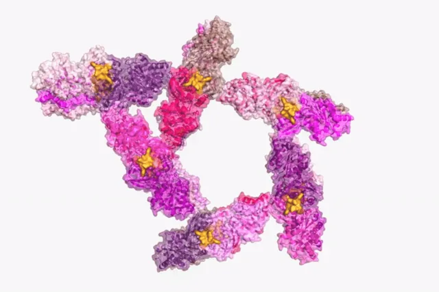
2025 · Cat1 in Science
Second good news of 2025 - we have reported a CRISPR associated CARF-TIR (Toll/Interleukin-1 Receptor) effector (Cat1) structure in Science. Interestingly, we find that even though the apo CARF-TIR (Cat1) protein elutes as a dimer, the effector forms a triple filament bundle which further associates to form a supramolecular pentameric filament bundle in the presence of the cA4 signal molecule during CRISPR defense. The accompanying animation shows the structure, which was great fun to solve! The Rockefeller University published a press release (Rockefeller research feature), give this a read for a nice scientific overview of the work.
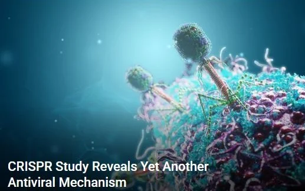
January 10, 2025
Happy New Year 2025! It's good to see the Cad1 work is getting traction. Lin et al. wrote an article in Cell Host & Microbe highlighting our work. Genetic Engineering & Biotechnology News covered our work (GEN research coverage), and The Rockefeller University published a press release (Rockefeller research feature).
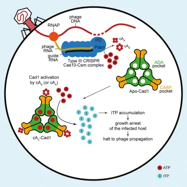
December 15, 2024
2024 closes on a high note! The Cad1 (CRISPR-associated adenosine deaminase 1) is out in Cell. This collaborative work with Christian from the Marraffini lab progressed fast (lucky us!), and it's gratifying to see this out.
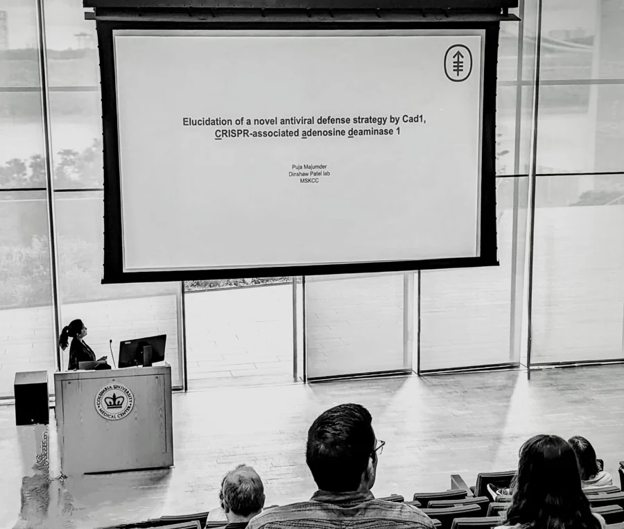
June 8, 2024
I have been doing a lot of cryo-EM lately and became an independent user of the cryo-EM facility at MSKCC. Also, had a lot of beamtime at New York Structural Biology Center (NYSBC), and National Center for CryoEM Access and Training (NCCAT). I also had the chance to present my work at the Fourth NYC Area Cryo-EM Meeting on June 6, 2024 - great talks by a lot of microscopists and it was a beautiful learning experience!
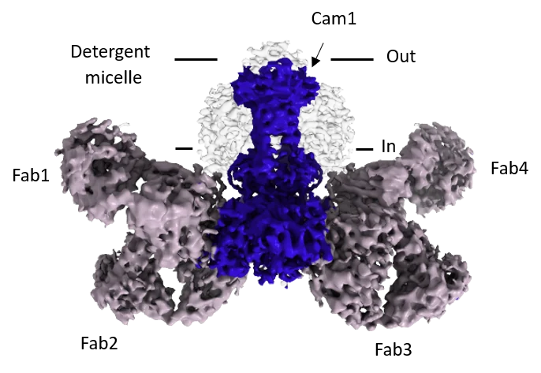
January 11, 2024
NYC does have lovely things in store. The first one from my postdoc is out in Nature . Happy New Year indeed! Hopefully more will follow soon.
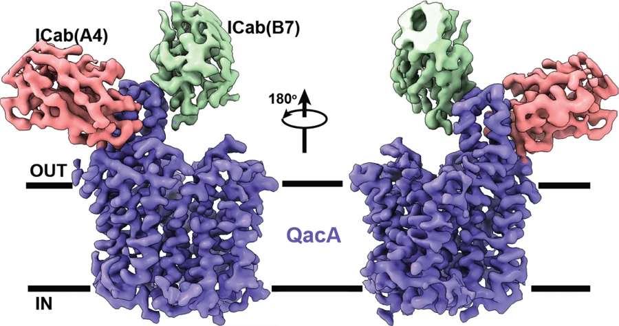
July 20, 2023
The structural part of my PhD thesis work in the Penmatsa Lab came to fruition and got published in The EMBO Journal. Thanks to the Diamond Light Source, UK for the beamtime, and thanks to the ICAR - National Research Centre on Camel for supporting our adventurous endeavour to generate nanobodies!
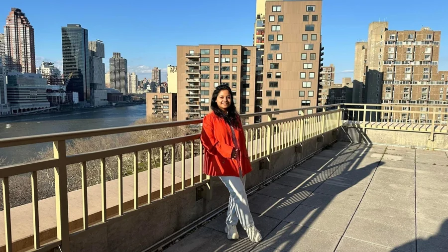
April 17, 2022
Finished my PhD at the Penmatsa Lab, MBU, IISc and moved to NYC for my postdoc stint at the Dinshaw Patel Lab. New York looks stunningly beautiful in the spring, and I'm all excited about what this city and the time have in store!